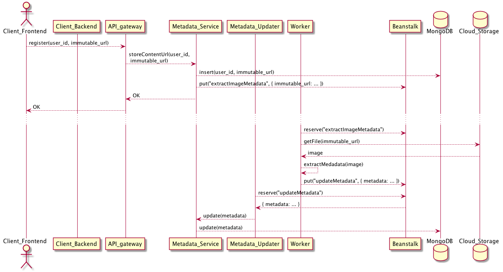
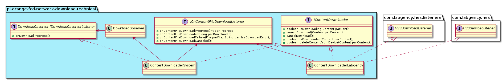

PlantUML
Mettez la documentation dans votre code
Presentation créée par Nicolas Bossard (SOFT) pour le dev/test day
Slides
09 sept 2015
Disclaimer
Je suis un développeur, utilisateur de l'UML à des fins pratiques pour faire passer un message ou une connaissance de l'appli...pas un gourou de l'UML, mes schémas ci-après, ne sont donc surement pas éxempts d'entorses à la norme.
A l'origine
(http://www.yuml.me/diagram/scruffy/activity/draw)
un échec :
- un outil en ligne extrèmement instable,
- un schéma moche,
- pas d'adhésion des autres développeurs
mais un an plus tard...plantUML
PlantUML Pour quoi faire
générer des diagrammes UML à partir de descriptions textuelles que vous pouvez inclure dans votre code
éviter de s'appuyer sur des logiciels payants (visio, entreprise architect), peu répandus (dia), ou vieillissants (bouml),mais surtout extenes au source, et que donc on ouvre rarement ou jamais
Tarifs...
open source GPLdéveloppement continu : bi-mensuel,
depuis 2009 (actuellement v8031... sic)
Capacités de PlantUML
diagramme de séquence

diagramme de classe

diagramme de cas d'utilisation

diagramme d'activité

Mais aussi...
diagramme wireframe

Diagramme de déploiement
Diagramme d'état
Diagramme d'objet
Exemple d'utilisation dans nos projets
BoxWidgets, Fast content Download, Homelan, Moocdiagrammes de sequence
Algorithmes
Pour les algos que vous ne cessez de réexpliquer ou pour le reverse engineering
Algorithmes (ex. 2)

Enchainement des écrans
Diagrammes de classe
Utilisation
Utilisation du jar plantuml
double click (windows) ou (linux) java -jar plantuml.jar
Directement dans l'IDE (via un plugin)
Sur l'Internet
Pour des test rapides http://www.planttext.com/planttextSur l'Intranet
http://plantuml-etherpad.kermit.rd.francetelecom.fr/ Merci à Matthieu SALVAT (présent sur Rennes pour les dev et test days)Dans la chaine d'intégration continue (jenkins)
via une application Android...
90 à ce jour sur http://fr.plantuml.com/running.html
Installation
Attention le jar repose sur graphviz
http://graphviz.org/Download..phpDEMO
utilisation du plantuml.jar
Noter que l'image générée a le même nom que le fichier d'origine sauf si l'on précise
@startuml image.png
...
@enduml
Retours d'usage en vrac
La syntaxe est facile à appréhender et tolérante, on se bat assez peu contre l'outil
Les graphes générés sont lisibles... parce qu'ils sont écrits manuellement et donc orientés pour faire passer un message
La doc sur http://plantuml.com/ est très complète, en français (bien que d'aspect vieillotte)
et les manques éventuels se trouvent facilement dans les forums
Retours d'usage en vrac (suite)
Pour les plus (grands) diagrammes de classes, utilisation des instruction include et hideNe pas trop essayer de gérer la mise en forme, ça résoud des probs temporairement... mais perturbe l'évolution
exemple
écriture diag d'activité


exemple
écriture diag de classe

Questions
... elles sont les très bienvenues